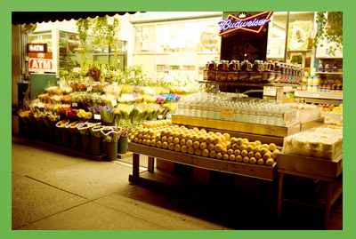

Hack Urban Food Grand Prize
The Issue
Consider the bodega. It goes by many names - corner market, deli, convenience store. In urban “food deserts”, bodegas are often the only convenient way for locals to buy fruit and vegetables in a neighborhood otherwise dominated by fast food chains. But fresh produce isn’t an easy sell when surrounded by packaged snacks, and 30% of a bodega’s fresh produce stock spoils and goes in the trash.
The Challenge

For the 2014 Branchfood Hack Urban Food competition, I teamed up with three enthusiastic strangers to tackle a problem related to food in urban environments. As the sole UX designer on the team, I made it my priority to advocate for low-income users, who I felt stood the most to gain from solving problem effecting urban environments.
The Spark

What if people could be notified as soon as their local markets got their latest shipment of fresh produce? This could generate interest in buying the produce as soon as it hits the shelves, resulting in less wasted stock for the store owner and better tasting, longer lasting produce for the customer.
I loved this idea and dubbed it "Fresh Text". I opined there was one element that could make of break it's success - accessibility and ease of use. Instead of buiding the system as an app, I wanted a system based on SMS text messages. 30% of the U.S population doesn’t own a smartphone, but does own a feature phone. I wanted to design our service for them.
The Process
I created the user flow of our Fresh Text service.
Store Owner Sign-Up

Every step of Fresh Text can be done quickly from a feature phone, from sign up to distributing an alert.
Customer Sign-Up

How do customers know to sign up for their closest store’s alerts? Signs inside the store would let customers know they could receive free alerts simply by texting in the store’s code to Fresh Text. Customers can subscribe to as many local markets as they want, all for free.
I put together all of my team’s work into a presentation for the judges that told the story of the owners and customers who could use Fresh Text.
The Outcome
Fresh Text won the Hack Urban Food grand prize. Our prize package included $5,000, coworking space, and legal help to get us started. Since winning, my team has begun a research and development phase to test our assumptions, speak to local market owners and customers, and determine the real-world viability of Fresh Text. I feel pretty great about it.